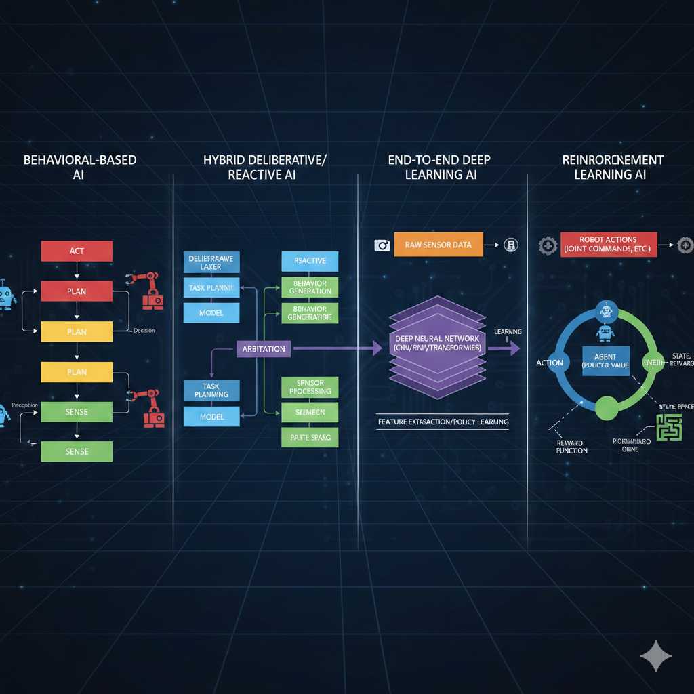
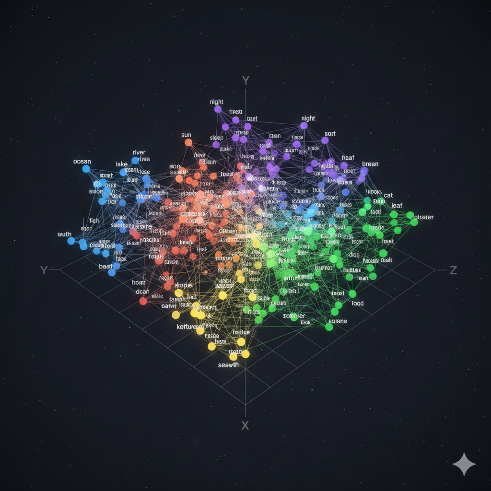
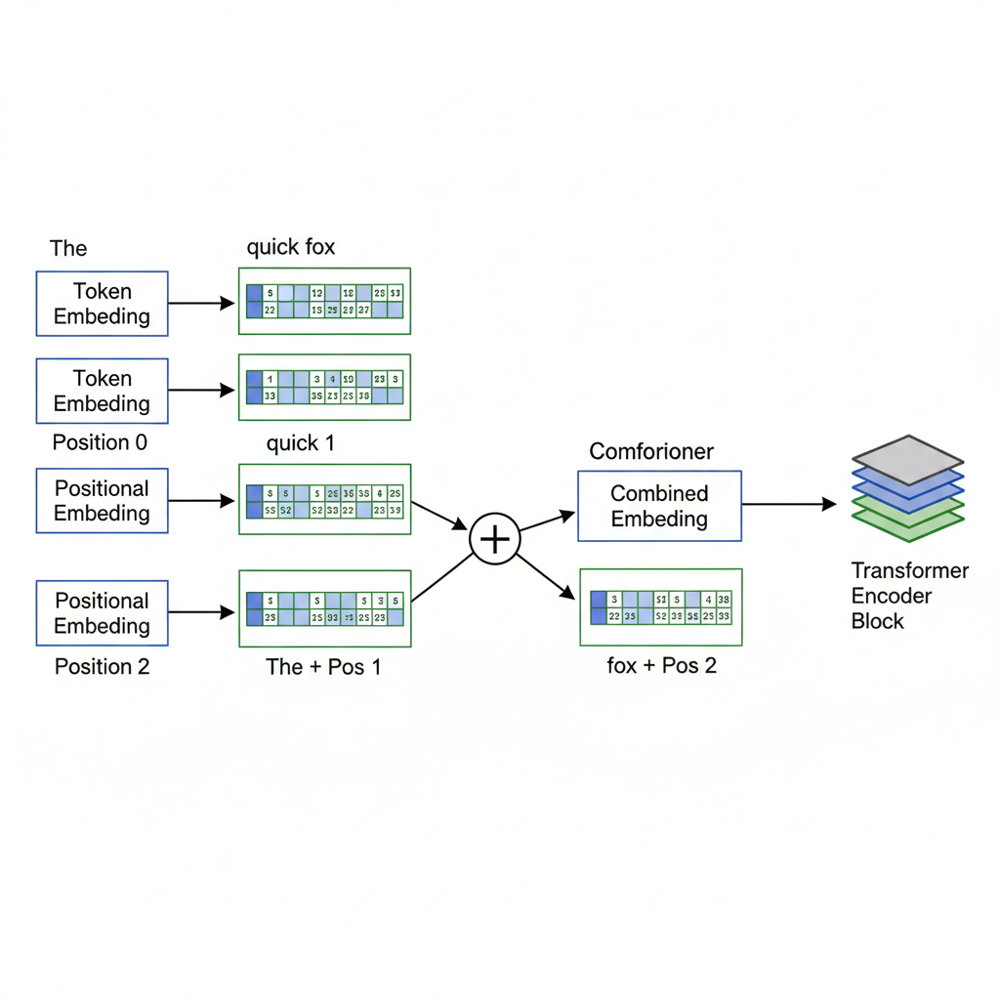
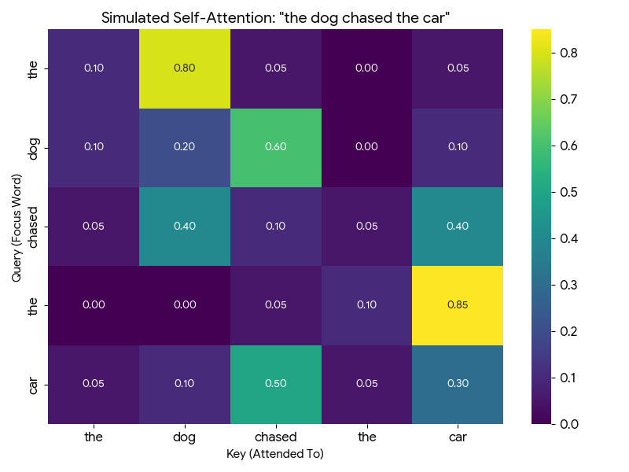
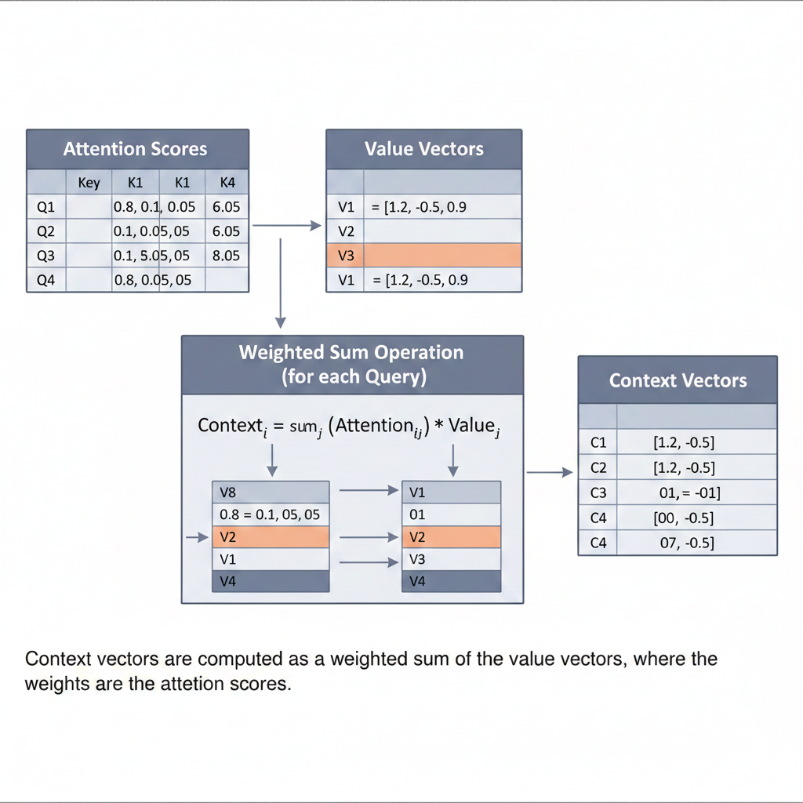
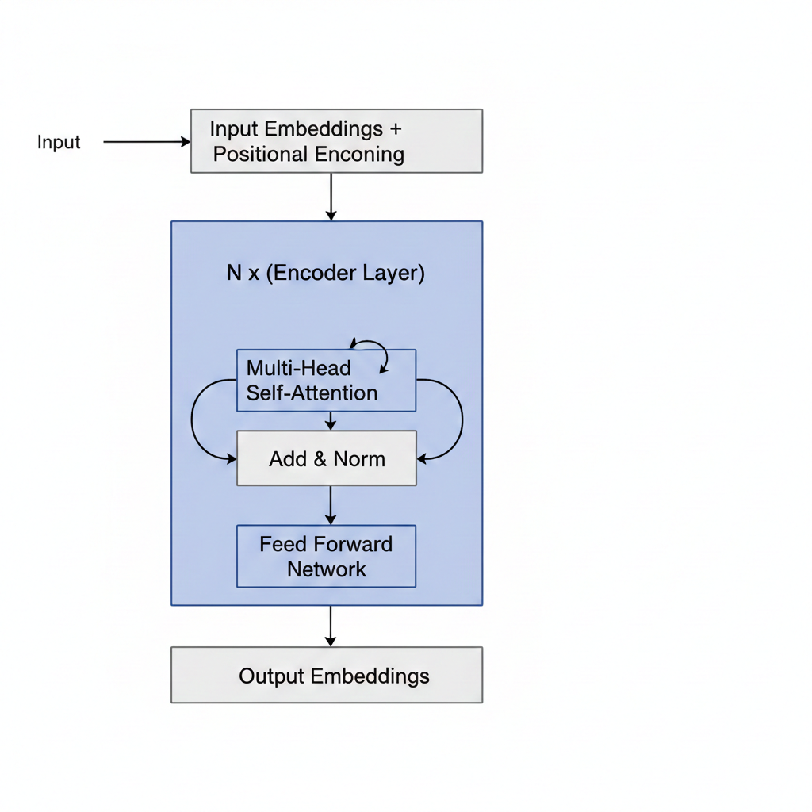
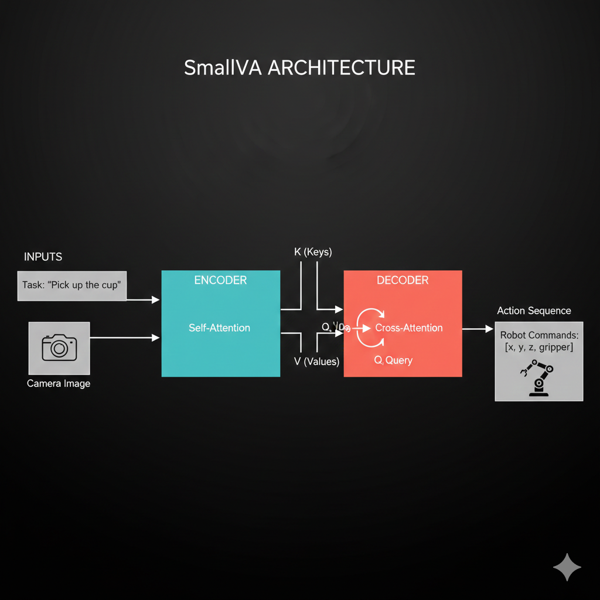
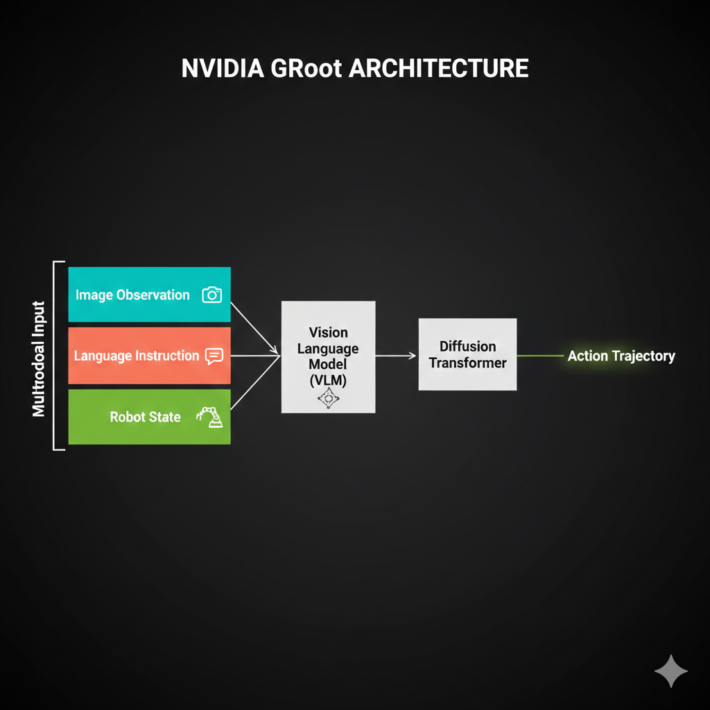
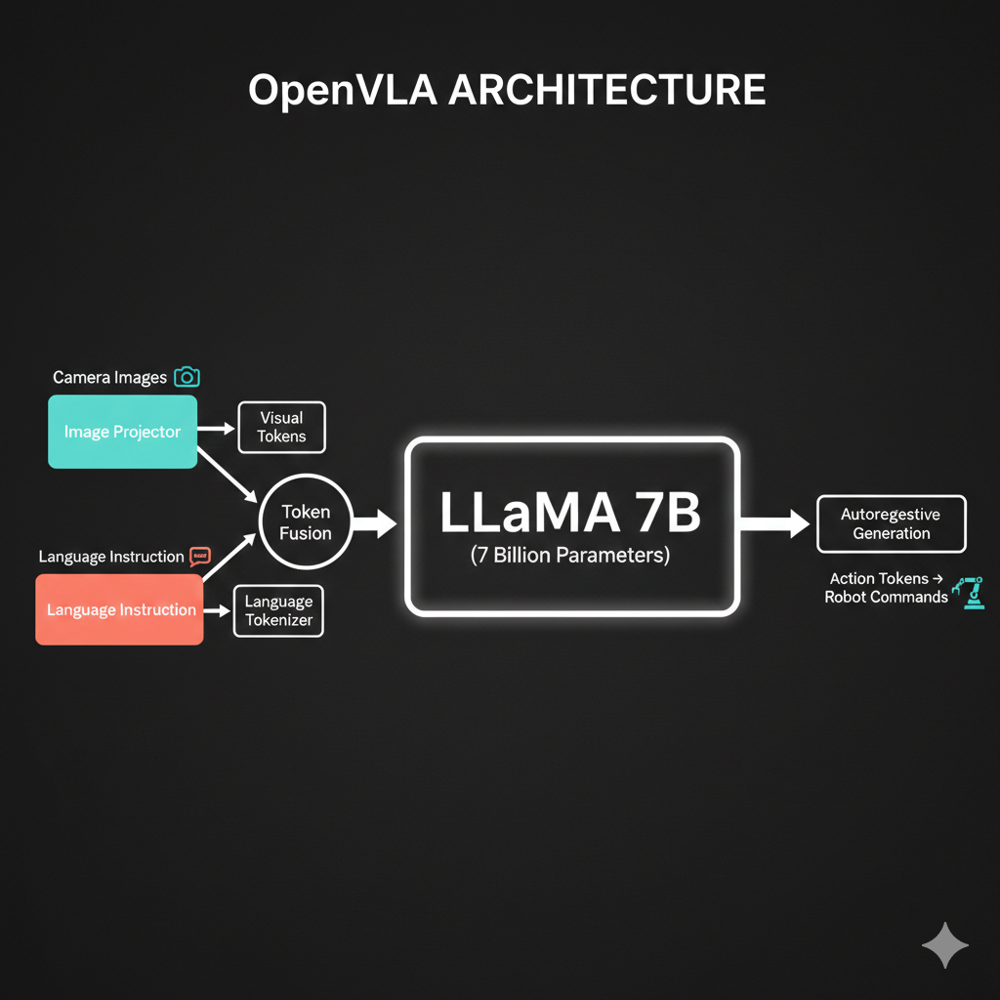

Lesson 3: The Transformer Revolution
The Architecture That Changed Everything

In this lesson, we unlock the transformer architecture - the breakthrough that powers ChatGPT, modern robot policies, and nearly every frontier AI system. By the end, you’ll read architecture diagrams like a native speaker.
🎧 Prefer to listen? Experience this lesson as an immersive classroom audio.
Chapter 1: The Revolution Arrives
Dr. Nova, I’ve been reviewing the architectures you mentioned at the end of Lesson 2 - OpenVLA, ACT, SmallVA, GRoot. And honestly? I’m intimidated. There are all these boxes labeled “self-attention,” “cross-attention,” “Q, K, V”… I feel like everyone speaks a language I don’t understand.
smiles That intimidation is exactly why I wanted to dedicate an entire lesson to transformers. Let me show you something.

Look at these four architectures. Different teams, different companies, different years. But what do they all have in common?
They all mention “transformer” or “attention” somewhere…
Exactly! The transformer architecture is like the Latin of modern AI - once you learn it, you can read almost any architecture diagram. Let’s do a quick recap of where we are in our journey.
In Lesson 1, we discovered that point estimate policies fail when there are multiple valid solutions. Averaging “go left” and “go right” gives you “go straight into the obstacle.”
In Lesson 2, we learned that deep generative models solve this by predicting probability distributions instead of single values. And we dove deep into Variational Autoencoders - how they compress data into a latent space and reconstruct it.
Right - the encoder compresses images into latent variables Z, and the decoder reconstructs from Z. We even talked about how for robotics, our observations include both images AND joint angles from the SO-ARM101.
Perfect recall! Now here’s the thing - VAEs are great for capturing hidden factors of variation. But they were designed for independent samples, not sequences. And robotics is fundamentally about sequences.
Think about it: robot actions form a trajectory over time. Language is a sequence of words. Even images, as we’ll see, can be treated as sequences. And sequences have a special property - the elements are related to each other.
So “I am in India” has relationships between the words - “I” relates to “am,” “India” relates to the whole sentence…
Exactly! And capturing those relationships - those dependencies between elements in a sequence - is what transformers do brilliantly. Before transformers, people used Recurrent Neural Networks (RNNs), but they were slow and struggled with long sequences.
In 2017, a paper changed everything. It was titled “Attention Is All You Need,” and it has over 210,000 citations. That’s more than most professors accumulate in their entire careers, combined!

By the end of today, you’ll look at that architecture diagram and understand every single component. You’ll be able to read robotics papers like a native speaker. Ready?
Absolutely. Let’s do this!
Chapter 2: Speaking the Language
Let’s start with a simple task that will help us understand every piece of the transformer. Imagine we want to teach an AI to swap adjectives and nouns.
Input: “red car” → Output: “car red”
Input: “blue bike” → Output: “bike blue”
Sounds trivial, right? But this simple task will teach us everything about transformers.
Why such a simple example? Wouldn’t a real NLP task be more relevant?
Because simplicity reveals the mechanics. Once you understand how transformers swap “red car” to “car red,” understanding how they translate English to Hindi, or generate robot trajectories, becomes almost trivial.
First, we need to define our vocabulary - the set of all possible tokens our model can work with.
VOCABULARY (18 tokens):
Colors: white, blue, green, yellow, black, red, orange, purple
Objects: car, bike, tree, house, ball, bird, cat
Special: BOS (beginning of sentence)
EOS (end of sentence)
PAD (padding)What are those special tokens for?
Great question! BOS tells the model “start generating now.” EOS tells it “stop generating.” And PAD makes all sequences the same length for batch processing.
Think about ChatGPT - when you ask a question, how does it know when to stop answering? It generates tokens until it produces an EOS token. Without it, LLMs would ramble forever!
Now, here’s the first key insight: computers can’t directly process words like “red” or “car.” We need to convert them to numbers. This is called embedding.
An embedding is a vector representation of a token that captures its semantic meaning. Similar words have similar embeddings - “king” and “crown” are close together, while “king” and “banana” are far apart.
Imagine each token wearing a uniform - a vector of numbers that represents everything about that word. In our simple example, we might use 3-dimensional embeddings. In reality, models use 512, 768, or even higher dimensions.

So “red” gets mapped to something like [0.2, 0.8, 0.1] and “car” gets [0.7, 0.3, 0.5]?
Exactly! But there’s a problem. Consider these two sentences:
“The dog chased the car”
“The car chased the dog”
Same words, same token embeddings - but completely different meanings! The first is normal, the second is bizarre (unless it’s a self-driving car with road rage).
Oh! The position of each word matters. “Dog” in position 2 versus position 5 changes everything.
Brilliant! That’s why we add positional embeddings - vectors that encode WHERE each token appears in the sequence. Position 0, position 1, position 2, and so on.
The final input embedding is: Token Embedding + Positional Embedding

This was actually known before transformers. The embedding layer is standard practice in NLP. What transformers contributed is what happens NEXT.
Chapter 3: The Attention Mechanism
Now for the magic - the attention mechanism. This is THE innovation that makes transformers work.
Consider our input: “the red car”
After embedding, each token has a vector. But here’s the question: does the token “red” care about where it appears? Does it care about “the” or “car”?
Well… “red” describes “car,” so they’re definitely related. And “the” kind of connects to both.
Exactly! Your brain instantly forms these connections. In a split second, you understand which words are related to which. The attention mechanism is our attempt to capture this computationally.
Let’s build an attention matrix for “the dog chased the car”:

Every row is a query asking: “How important are you to me?” Every column is a key answering: “Here’s how relevant I am.”
The values in the matrix are attention scores - how much each token should focus on each other token.
So “dog” has high attention to “chased” because the dog is doing the chasing, and “chased” has high attention to “car” because that’s what’s being chased?
You’re getting it! Now, to compute these attention scores, each token embedding is transformed into THREE vectors:
- Query (Q): “What am I looking for?”
- Key (K): “What do I contain?”
- Value (V): “What information should I share?”
The attention score between token A and token B is computed by comparing A’s Query with B’s Key. It’s like asking a question and seeing how well someone’s expertise matches.
- Query: The question a token asks - “Who should I pay attention to?”
- Key: The label each token wears - “Here’s what I’m about”
- Value: The actual content each token shares when attended to
I think I understand Query and Key - they determine the attention scores. But what’s the purpose of Value? Why not just use the original embeddings?
Excellent question - this confused me too when I first learned transformers!
The Value vector encodes the semantic information that gets shared. It’s learned separately from Q and K, allowing the model to distinguish between “who to attend to” (Q, K) and “what to take from them” (V).
Empirically, having a separate learnable Value matrix works much better than using raw embeddings. It gives the model more expressiveness.
Now, once we have attention scores, we use them to create context vectors. Here’s the geometric intuition:

For each token, we take a weighted sum of all Value vectors. The weights are the attention scores. If “dog” attends 80% to “chased” and 20% to everything else, its context vector is 80% influenced by “chased’s” Value.
So the context vector is like an updated version of the token that now “knows about” the other tokens it should care about?
Perfectly said! Before attention, each token only knows about itself - its uniform. After attention, each token has been transformed to incorporate information from related tokens.
Let me show you an interactive visualization that makes this crystal clear:
You can see here that “visualization” strongly attends to “data” and “users” - because data visualization is FOR users. The attention mechanism discovers these relationships automatically through training!
This is beautiful. One question - you called this “self-attention.” Why “self”?
Because every token attends to every OTHER token in the SAME sequence. The sequence is attending to itself. Later, we’ll see “cross-attention” where tokens from one sequence attend to tokens from a DIFFERENT sequence.
And that completes the self-attention layer! Input: token embeddings. Output: context vectors that capture relationships.
Chapter 4: The Encoder
Now let’s assemble the complete transformer encoder. We’ve seen the pieces - let me show you how they fit together.

The encoder has three main components:
- Input Embedding Layer: Token embeddings + positional embeddings
- Self-Attention Layer: Computes Q, K, V and creates context vectors
- Feed-Forward Network: A simple MLP that processes each context vector independently
What does the feed-forward network do? I thought we already have context vectors from attention.
Good question! The feed-forward network adds non-linearity and allows the model to transform the context vectors further. It’s typically:
Input dimension → 4× larger hidden dimension → Back to input dimension
So if our embeddings are 512-dimensional, the FFN goes 512 → 2048 → 512.
Now, one thing I glossed over - in practice, we don’t use just ONE attention head. We use multi-head attention.
Instead of one attention matrix, we compute MULTIPLE attention matrices in parallel - typically 8 or 12 “heads.” Each head can learn to attend to different relationship types (syntactic, semantic, positional, etc.). The outputs are concatenated and projected back.
So one head might learn “what adjectives modify which nouns” while another learns “what verbs connect to what subjects”?
Exactly! Different heads specialize in different relationship patterns.
Now, the encoder’s job is to create a rich representation of the input sequence. It reads “the red car” and produces context vectors that understand: “red” modifies “car,” “the” is an article, and together they describe a colored vehicle.
But the encoder doesn’t generate output. It only encodes. For generation, we need the decoder.
Chapter 5: The Decoder
The encoder creates understanding. The decoder creates output. Let’s see how it generates “car red” from understanding “red car.”
The decoder is where the autoregressive magic happens - generating one token at a time. Let’s trace through it step by step.
Step 1: We start with just the BOS token.
{kind=link}
So the decoder input starts with just BOS, and we want it to predict “car”?
Exactly! First, BOS goes through self-attention (with just itself, since it’s the only token so far). But here’s the key - the decoder needs to know about the INPUT sequence “the red car.”
This is where cross-attention comes in.
{kind=link}
In cross-attention: - Queries come from the decoder (BOS) - Keys and Values come from the encoder’s output (the context vectors for “the,” “red,” “car”)
The decoder token asks: “Given what the encoder understood, what should I generate next?”
Oh! So the query is “what should come first?” and it attends to the encoder’s understanding of the input. Since we want to swap, it should attend most to “car”!
Exactly! The cross-attention scores tell the decoder to focus on “car” (since that should come first in the output).
Let me show you the geometric interpretation:
{kind=link}
The decoder’s context vector becomes a weighted combination of the encoder’s value vectors. High attention to “car” means the decoder’s representation shifts toward “car’s” meaning.
And then after all the attention and feed-forward layers, how do we actually get the word “car” out?
Vocabulary projection! We take the final context vector and project it to the size of our vocabulary using a linear layer + softmax.
{kind=link}
Each vocabulary word gets a probability. We pick the highest one - “car” with 0.92 probability. That becomes our first output token.
Step 2: Now we have “BOS car” as input to the decoder. We repeat the process to predict “red.”
Step 3: With “BOS car red” as input, the model predicts EOS, signaling it’s done.
So LLMs like ChatGPT are doing this thousands of times to generate each response? One token at a time?
Exactly! And here’s an important detail: ChatGPT and most modern LLMs are decoder-only architectures. They don’t have a separate encoder - they use only the decoder with masked self-attention.
But for tasks like translation - “I am in India” → “मैं भारत में हूं” - you need BOTH encoder and decoder. Why?

The word order changes between languages. “India” is 4th in English but 2nd in Hindi. The encoder captures the SOURCE meaning, and cross-attention allows the decoder to attend to relevant source words regardless of their position.
Without the encoder, the decoder would have no way to “see” the full source sentence before generating. It would be like translating blind!
In the decoder, each token can only attend to tokens BEFORE it (not after). This prevents “cheating” - when generating token 5, you can’t peek at what token 6 should be. This is why some attention matrices show gray/blocked regions beyond the diagonal.
Chapter 6: Vision Transformers
This all makes sense for text - words are naturally sequential. But images? How do you apply transformers to something that’s a 2D grid of pixels?
That’s exactly what researchers asked after the transformer paper. And in 2020, the Vision Transformer (ViT) paper answered: “An image is worth 16x16 words.”
The trick is beautifully simple: treat image patches as tokens.

Take a 224×224 image, divide it into 16×16 pixel patches. You get 14×14 = 196 patches. Each patch becomes a “token” with its own embedding.
So instead of words, we have image patches? And each patch gets embedded into a vector?
Exactly! Each patch is flattened (16×16×3 = 768 values for RGB) and passed through a linear layer to create a patch embedding of whatever dimension we want (e.g., 512).
And just like text, position matters! Shuffling the patches gives a very different image.

So we add positional embeddings to patches too. Patch at position (0,0) has a different positional embedding than patch at (2,3).
Okay, but here’s my question. For text, we’re predicting the next token. For images… what’s the output? We’re not predicting “the next patch.”
Great observation! For classification tasks, we need a single vector representing the ENTIRE image. But self-attention gives us context vectors for EACH patch. How do we get one summary vector?
The solution is the CLS token - a special learnable token prepended to the sequence.
{kind=link}
Wait - we just ADD a fake token? And it magically summarizes the image?
It’s not magic - it’s learned! The CLS token is initialized randomly but trained end-to-end. Through self-attention, it learns to attend to ALL the important patches.
Look at how CLS attention works:
{kind=link}
The CLS token’s attention scores determine how much information it takes from each patch. For a “dog vs cat” classifier, CLS learns to attend heavily to patches containing the animal’s face and body.
After the encoder, we ONLY use the CLS context vector and pass it through a classification head (a simple MLP) to get class probabilities.
- Split image into patches (e.g., 16×16 pixels)
- Linearly embed each patch to create patch embeddings
- Add positional embeddings
- Prepend a learnable CLS token
- Pass through transformer encoder
- Use CLS token’s output for classification
This is elegant! But training a ViT from scratch must require massive datasets…
You’re right - ViT was originally trained on ImageNet-21K (14 million images). But here’s the beautiful thing: pre-trained ViTs can be fine-tuned for new tasks with very little data.
Google released “google/vit-base-patch16-224” which you can use directly. Just replace the classification head with your number of classes and fine-tune on your dataset.
{kind=link}
I have a notebook where we classify plant disease images using a pre-trained ViT. We start at 94% accuracy and reach 97% after just 3 epochs of fine-tuning. The pre-trained model already understands “how images work” - we just teach it our specific classes.
Chapter 7: Transformers Meet Robots
Now for the payoff - how does all this apply to robotics?
Remember our SO-ARM101 setup. The robot’s observation includes: - Images from cameras (480×640×3 pixels) - Proprioceptive data - 6 joint angles per arm
And the output is a sequence of actions - target joint positions over time.
So robot control is sequence-to-sequence! Observations come in as a sequence (image frames, joint states), and we output a sequence of actions!
Exactly! Robotics is sequence modeling. And transformers are exceptional at sequences.
Now let me show you how modern robotics architectures use everything we learned:
SmallVA Architecture: 
{kind=link}
See how the encoder processes images and text (task instructions) using self-attention? The output becomes Keys and Values for the decoder. The decoder generates actions through cross-attention to these observations.
And the Q, K, V labels make sense now! K and V come from the encoder, Q comes from the decoder.
You’re reading architecture diagrams like a native speaker!
NVIDIA’s GRoot: 
{kind=link}
GRoot uses a Vision Language Model (which is just a transformer processing both images and text) to create an encoding. Then a “diffusion transformer” generates actions. We’ll learn about diffusion models in a later lesson - just note that transformers appear everywhere.
OpenVLA: 
{kind=link}
OpenVLA uses a 7-billion parameter LLaMA model (decoder-only transformer) to generate actions. Images are projected to the same embedding space as language tokens, and the combined sequence is processed autoregressively.
They’re all using the same building blocks - just arranged differently! And I can actually follow what’s happening now.
That’s the power of understanding transformers deeply.
Now, here’s a teaser for our next lesson. The policy we’ll implement - ACT (Action Chunking with Transformers) - combines everything:
- VAE for handling multimodality (from Lesson 2)
- Transformer encoder for processing observations
- Transformer decoder for generating action sequences
- CLS token for image encoding

Wait - the VAE latent variable goes INTO the transformer encoder? I would have thought the encoder produces the latent variable!
That’s the beautiful twist in ACT! The VAE captures the multimodal nature of expert demonstrations (different ways to fold clothes), and its latent variable z is passed as a special token to the transformer encoder.
During training, we have access to the full demonstration trajectory, so we can encode it with the VAE. During inference, we sample z from the prior distribution.
But that’s for next lesson. For now, you have homework:
- Read the original transformer paper - “Attention Is All You Need”
- Read the ViT paper - “An Image Is Worth 16x16 Words”
- Think about ACT - How would you combine VAE + Transformer Encoder + Transformer Decoder?
You now speak transformer. The intimidating diagrams? They’re your native language now.
I can’t believe how much clearer everything is. Those architecture diagrams that terrified me at the start? I can actually read them now!
That’s the transformation - pun intended. Next lesson, we implement ACT and make our SO-ARM101 arms move with learned policies.
The revolution continues!